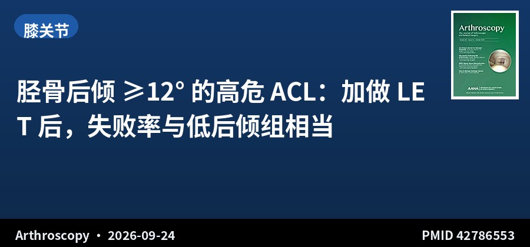

SPORTS MEDICINE & ARTHROSCOPY DIGEST
胫骨后倾 ≥12° 的 ACL，注定失败？加做这一招后不再是
第 017 期 · 2026-09-26
9月25日 10 本核心期刊新收录 4 篇 · 本期 1 主打 + 3 精简
看到术前片子上胫骨后倾角 ≥12°，你会不会心里一紧——「这 ACL 怕是容易再断」。这几乎是很多医生的本能反应。但今天这篇 289 例的研究说：加做外侧关节外腱固定（LET），这个「高危」标签可能不再成立。
▍今日主打 · TODAY’S FOCUS

回顾性队列 · III级证据 · 289例 · 随访38个月 Retrospective Cohort · Level III · 289 pts · 38-mo FU
胫骨后倾 ≥12° 的高危 ACL：加做 LET 后，失败率与低后倾组相当
Graft Failure Rate Is Similar Between Groups With and Without Increased Posterior Tibial Slope After Primary ACLR With Lateral Extra-Articular Tenodesis
Arthroscopy · 2026-09-24 · 单中心回顾性队列 · PMID 42786553
一句话结论：289 例初次 ACLR + LET（2013–2022，≥2 年随访），按胫骨后倾分层：PTS≥12°（45 例，13.0°±1.2°）vs <12°（244 例，8.1°±1.5°）。移植物失败率 24% vs 18%（P=.411）。多因素 Cox 分析未发现任何独立失败预测因子，包括 PTS（HR 1.07/度，95%CI 0.95–1.19，P=.260）。并发症与对侧 ACL 损伤率组间相似，性别分层结果一致。末次随访 IKDC 达 MCID 98%、Lysholm 100%，组间无差异。
要点：单中心回顾性，纳入 ≥16 岁、具备高危特征（pivot shift≥2、Beighton≥4 或重返旋转类运动）且行初次 ACLR+LET 者。以 PTS≥12° 分层，比较失败、残余 pivot shift、并发症与 PROMs，用多因素 logistic 与 Cox 回归识别失败预测因子。
对临床的启示：「胫骨后倾角大 = ACL 失败高风险」是近年被反复强调的认知，甚至有人主张后倾 ≥12° 就该同期截骨。这篇给出了一个重要的反证——但前提是「加做 LET」：在外侧关节外加固的保护下，后倾角不再独立预测失败。这和前几期「外侧后倾决定前向移位」「MacIntosh 髂胫束联合重建」形成一条完整线索：前外侧结构的补充，可能正是平抑后倾风险的钥匙。局限是单中心、PTS≥12° 组仅 45 例，且两组失败率都偏高（18–24%），提示这一高危人群本身结局就难。
Conclusion: 289 primary ACLR+LET (2013–2022, ≥2-y follow-up), stratified by slope: PTS≥12° (45, 13.0°±1.2°) vs <12° (244, 8.1°±1.5°). Graft failure 24% vs 18% (P=.411). On multivariable Cox analysis, no independent predictor of failure was identified, including PTS (HR 1.07/degree, 95% CI 0.95–1.19, P=.260). Complication and contralateral ACL injury rates were similar, with consistent sex-disaggregated findings. Final MCID achievement was 98% (IKDC) and 100% (Lysholm), with no between-group differences.
Key points: Single-center retrospective of primary ACLR+LET (≥16 y) with high-risk features (pivot shift ≥2, Beighton ≥4, or return to pivoting sports). Stratified by PTS ≥12° vs <12°; outcomes included failure, residual pivot shift, complications and PROMs; multivariable logistic and Cox regression.
Clinical implications: 'High tibial slope = high ACL failure risk' has been repeatedly emphasized, with some even advocating osteotomy for PTS ≥12°. This study offers an important counterpoint—but only with LET: under lateral extra-articular reinforcement, slope no longer independently predicts failure. Together with earlier issues ('lateral slope drives anterior translation' and 'MacIntosh ITB combined reconstruction'), a coherent thread emerges: supplementing the anterolateral structures may be the key to neutralizing slope risk. Limitations: single-center, only 45 patients with PTS ≥12°, and high failure rates (18–24%) in both groups suggest this high-risk population is inherently difficult.
原文 / Source：doi.org/10.1002/arj.70616
▍其余 3 篇 · 一屏看完
髋关节
髋关节镜后盂唇愈合了，病人却说没觉得更好
Healed Acetabular Labrum on MRI Is Associated With Superior Achievement of Clinically Significant Outcomes After Hip Arthroscopy
220 例 FAIS，愈合组达 MCID/PASS 的比例更高，但术后绝对 mHHS、VAS 分数四组间无显著差异——影像愈合 ≠ 临床获益。
In 220 FAIS hips, the healed-labrum group achieved higher MCID/PASS rates, but absolute postoperative mHHS/VAS did not differ across groups—radiographic healing ≠ clinical benefit.
Arthroscopy · PMID 42789365 · doi.org/10.1002/arj.70611
膝关节
内侧副韧带损伤新分级：AMKI 三级分类
Current Concepts in Isolated and Combined Injuries of the MCL Complex, Part II: The Anteromedial Knee Instability Classification
用外翻应力 + 外旋试验把 ACL+MCL 联合损伤分成 A/B/C 三级，指导个体化治疗（Level V 概念综述）。
A three-letter A/B/C classification based on valgus-stress and external-rotation testing to guide individualized treatment of combined ACL–MCL injuries (Level V).
Knee Surg Sports Traumatol Arthrosc · PMID 42789756 · doi.org/10.1002/ksa.70630
膝关节
半月板后根修复，别急着让病人下地
Suboptimal Clinical and Radiologic Outcomes After Medial Meniscus Posterior Root Tear Repair With Early Partial Weight-Bearing
系统综述 271 例：术后 ≤4 周早负重结局不佳——PROs 偏低、OA 普遍进展、不愈合率 31–39%。
Systematic review of 271 cases: early partial weight-bearing (≤4 wks) yields poor PROs, universal OA progression, and 31–39% incomplete healing.
Arthroscopy · PMID 42786419 · doi.org/10.1002/arj.70529
💬 一起聊聊：看到后倾角 ≥12° 的 ACL，你现在会常规加做 LET 吗？你的「该做」阈值是几度？评论区聊聊。
关于本栏目：每日定时检索 10 本运动医学核心期刊前一日新收录文献，每日聚焦 1 篇值得深读的 + 其余精简速览，AI 辅助生成中英双语精要。
声明：本内容由 AI 辅助整理，仅供学术交流参考，观点与数据请以原文为准，不构成诊疗建议。文献题录与摘要来源：PubMed。
— 运动医学 · 关节镜文献速览 · 第 017 期 —